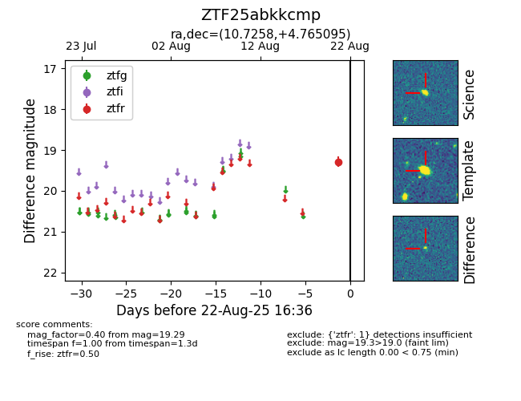

Target ZTF25abkkcmp at 2025-08-22 16:36, see:
FINK: fink-portal.org/ZTF25abkkcmp
Lasair: lasair-ztf.lsst.ac.uk/objects/ZTF25abkkcmp
ALeRCE: alerce.online/object/ZTF25abkkcmp
alt names
ZTF25abkkcmp (ztf,alerce)
coordinates:
equatorial (ra, dec) = (10.7258,+4.76510)
galactic (l, b) = (118.9126,-58.04003)
photometry
last ztfr=19.29
1 ztfr detections
